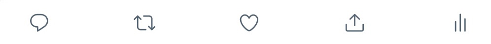

Twitter
Twitter
高場 @qifenn ･ 2021年7月23日18:51
@qifenn ･ 2021年7月23日18:51
あああああああああああああああああああああああああああああああああああああああああああ

@qifenn ･ 2021年7月23日18:51あああああああああああああああああああああああああああああああああああああああああああ
こんにちはよろしくおねがいします
2021年7月23日 13:20
体育館のドアの隙間から一瞬顧問みえただけで手振ってくれたかわいいな
2021年7月23日 13:43
デザイン変更します
2021年7月23日 18:47